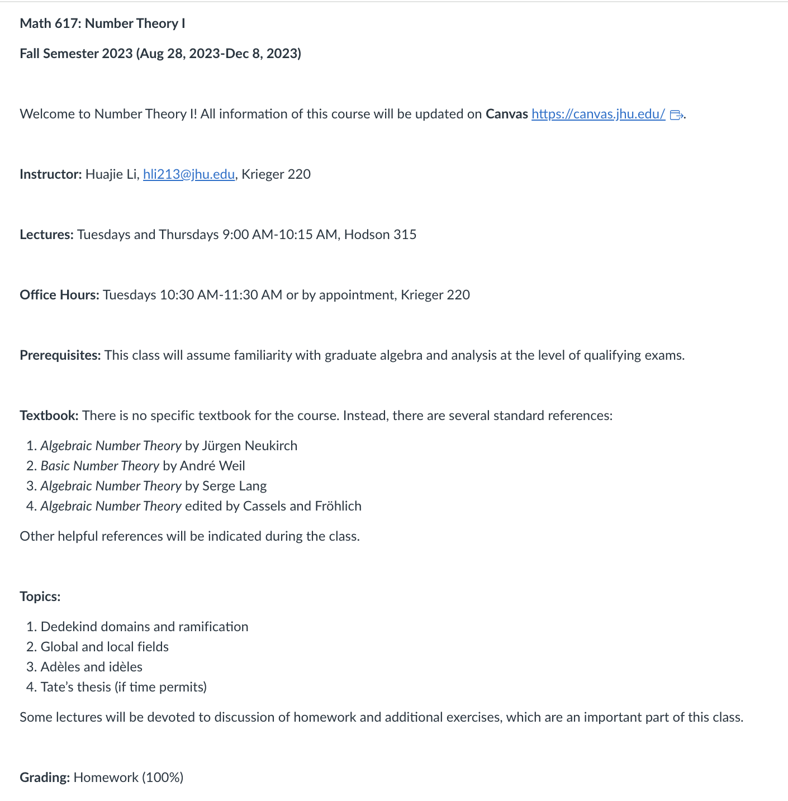

Digital Professor · Example Output · Interactive Method
A complete design for a PhD-level Number Theory 1 course, built by Claude from an instructor interview — the high-level case this method targets.
The interactive method on Number Theory 1, a PhD-level course — precisely the high-level case that motivated this whole line of work.
Advanced graduate courses are exactly where a fixed syllabus is least likely to exist and where a textbook's table of contents overshoots worst (see the summary's §5). An instructor interview sidesteps both: the professor states the real arc and the real prerequisites (here, "passed the quals").
Built from an instructor interview rather than a syllabus. A real graduate Number Theory syllabus is shown alongside so you can compare scope and sequencing — note how the interview-built arc (Dedekind domains → local/global fields → adèles/idèles → Tate's thesis) lines up with it.

The interview did not include this syllabus — it is shown only so you can judge how closely the interview-built design matches the course as actually taught.
Claude · Interactive intake · Algebraic number theory, from Dedekind domains through Tate's thesis
Instead of a syllabus, the model collected these answers directly from the instructor, then designed the course from them.
| Field | Instructor's answer |
|---|---|
| Level | PhD |
| Format | Lecture · two sessions per week |
| Duration | 14–15 weeks (≈28–30 sessions) |
| Assessment | Weekly homework only — no exams, no final |
| Assumed background | Passed algebra & analysis qualifying exams; real & complex analysis incl. measure theory (Haar measure); Galois theory |
Scope fidelity, again: the model scheduled Module 4 (Tate's thesis) last and marked it "if time permits / compressible," matching how such a course is really taught — the same restraint a table of contents can't provide.
| Weeks | Module | Goal |
|---|---|---|
| 1–4 | M1 · Dedekind Domains & Ramification | Establish the ring-theoretic foundations: ideal factorization and ramification in extensions. |
| 5–9 | M2 · Global & Local Fields | Develop local fields, then connect local and global via places, Minkowski theory, and units. |
| 10–12 | M3 · Adèles & Idèles | Assemble all completions into the adèle ring / idèle group with their topology and measure. |
| 13–15 | M4 · Tate's Thesis (if time permits) | Use adelic harmonic analysis for the functional equation of $\zeta_K$ and Hecke $L$-functions. |
Notice how much is pushed to "assumed background (quals)" — appropriate for a PhD course, and exactly what the instructor told the model.
| Topic | Prerequisite(s) | Where taught |
|---|---|---|
| 1.1 Dedekind domains | Noetherian rings, localization, integral closure | Assumed background (algebra quals) |
| 3.2 Topology, self-duality | Restricted-product topology; measure theory | §3.1; assumed (Haar measure) |
| 4.3 Global functional equation | Local functional equation; Poisson summation | §4.2, §3.2, §3.5 |
Assessment philosophy from the intake: weekly homework only, no exams — each set matched to that week's module and designed to catch specific failure modes.
| Module | Homework focus | Timing |
|---|---|---|
| Module 1 | Ideal factorization, ramification computations, verifying the fundamental identity | Weeks 1–4 |
| Module 3 | Adèle/idèle topology proofs; measure/volume computations; compactness write-ups | Weeks 10–12 |
| Module 4 | Local zeta integrals; the functional equation in worked cases | Weeks 13–15 (contingent) |
The full course design exactly as it compiles from LaTeX to PDF.
If the preview doesn't load, open the PDF in a new tab (13 pages · compiled with pdfLaTeX).